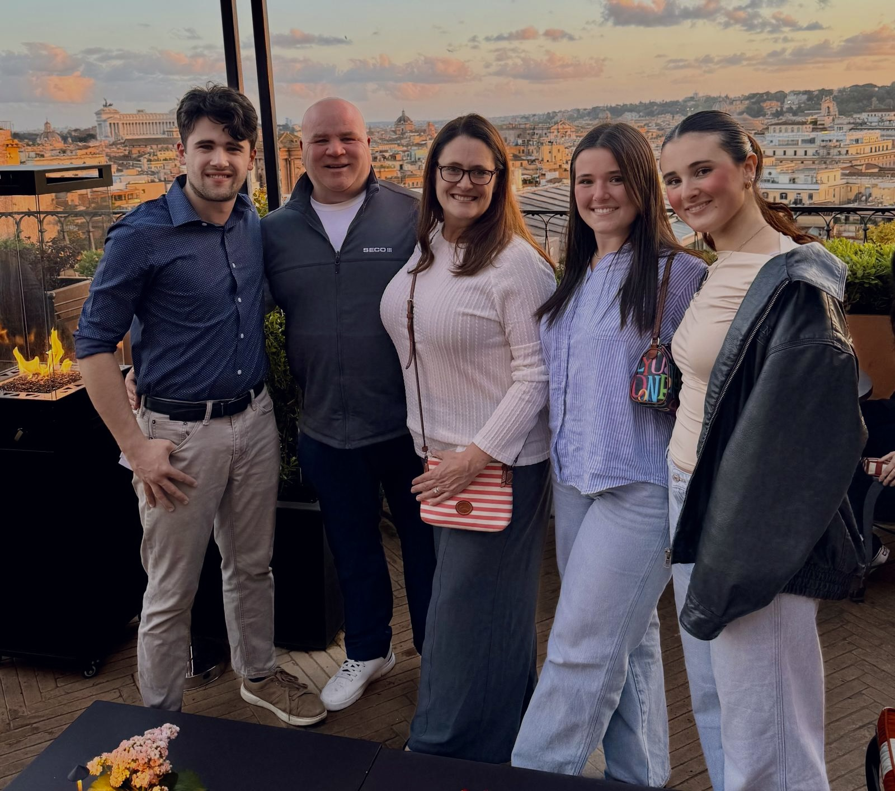

About Me
Hello, my name is Michaela Angus. I am originally from Chicago, Illinois, and I am currently a senior at the University of Iowa majoring in Business Analytics/Information Systems and Finance. After graduating this May, I will begin my full-time career as a Wealth Management Analyst at Northern Trust in Chicago. I had the opportunity to intern with Northern Trust this past summer, which confirmed my interest in the firm and the wealth management field, and I am excited to return in July and hopefully build my long-term career there. I am the middle child of three siblings, with an older brother who is 24 and a younger sister who is currently a freshman here at Iowa. I also have two dogs at home: a 10-year-old Yorkie-Bichon mix named Louie and an 11-year-old Shih Tzu mix named Teddy. I am especially excited to move back home this summer, save money, and enjoy everything Chicago has to offer as an adult post-grad.
My Interests
- Traveling Internationally
- Reading
- Trying New Foods and Restaurants
Top 3 Favorite TV Shows
- The Office
- Breaking Bad
- Tell Me Lies